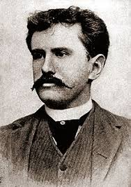

Chiếc lá cuối cùng (The Last Leaf) là một trong những truyện ngắn hay của nhà văn nổi tiếng người Mỹ O.Henry
 Sue(phiên âm: Xiu) và Johnsy(Phiên âm: Giôn-xi) là 2 nữ họa sĩ trẻ sống trong 1 khu nhà trọ. Cụ Behrman(Phiên âm: Bơ men) là một họa sĩ già cũng sống ở đó; cả đời cu khao khát vẽ được một kiệt tác nhưng chưa thực hiện được. Mùa đông năm ấy. Johnsy bị bệnh sưng phổi rất năng. Bệnh tật và nghèo túng khiến cô tuyệt vọng không muốn sống nữa và nghĩ rằng khi chiếc lá thường xuân cuối cùng rụng xuống sẽ là lúc mình lìa đời. Sue vô cùng lo lắng và hết lòng chạy chữa cho bạn nhưng vô ích. Biết được ý nghĩ điên rồ đó của Johnsy, cụ Berham âm thầm thức suốt đêm mưa gió để vẽ chiếc lá thường xuân. Chiếc lá cuối cùng đã không rụng trong đêm bão lớn khiến Johnsy nghĩ lại, cô hy vọng và muốn được sống. Tuy nhiên, cụ Berham lại chết vì bệnh sưng phổi sau một đêm đội mưa gió để vẽ hình chiếc lá cuối cùng lên tường nhằm cứu Johnsy. Sau khi Sue được thông báo rằng Johnsy đã thoát hiểm, cô lặng lẽ đến bên bạn báo cho bạn về cái chết của cụ Berham và bí mật về chiếc lá cuối cùng.